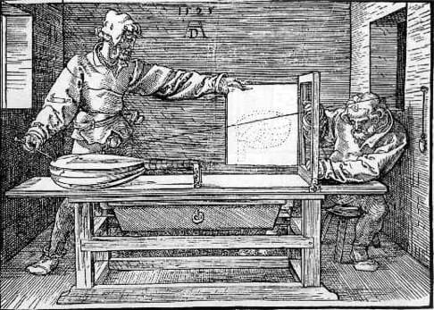

The Traité de Lutherie, published in July 2006, explains developments in the measuring and drawing processes used by instrument makers since the Renaissance.

From Vitruvius to Marin Mersenne, it was generally asserted that musical instruments should be made according to the rules of music. But the viols, guitars and violins in our museums do not seem to show any significant trace of this simple principle.
To elucidate this paradox François Denis, an instrument maker from Angers, embarks on a quest which takes him and the reader to the theoretical origins of instrument making.
In this richly illustrated 256-page book, the author explains how the proportions of musical instruments are connected to an archaic definition of measurement. In the same way as Renaissance architecture, the dimensions of forms are related to the dimensions and intervals of our musical composition rather than to the more familiar divisions of our graduated rulers. The demonstration of this principle involves deciphering an enigmatic mid-15th century plan of a lute.
The Traité de Lutherie sheds new light on the mental processes of craftsmen from a bygone era. Abandoning our modern representations, François Denis gives today's instrument makers the keys to a codification of form that underpinned the design of the mythical instruments made by the great Italian craftsmen.
In addition to these historical aspects, the book provides a considerable amount of previously unpublished information about techniques for ruler-and-compass drawing jealously guarded by mediaeval and Renaissance craftsmen. It is therefore also a real instruction manual for those who wish to gain a deeper understanding of the most emblematic forms of the instrument maker's craft and of the thought processes from which they sprang.